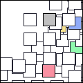
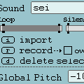

Lauki. version beta 0.9.2
View screenshot | View demo video
|
||||||
Description
Lauki is an instrument whose visual qualities define the musical outcome. It consists of a grid of many hundred identical small boxes which trigger a looping sound when clicked on. By importing custom sounds, you are able to use Lauki as a palette where sounds are set into looping patterns in different frequencies according to the boxes' position on the screen.
The
boxes can be dragged (individually or in groups) around the screen, resulting
in pitch changes and tonal differences. You can create custom grids that
can be easily saved and loaded up again later. Different sounds can be
applied to the boxes from a floating control panel, used to control which
part of the sound is going to loop as well as the frequency of it. The
number of sounds is limited to 8 and they cycle, according to the users
settings, until the box is deselected.
The control panel can be called up any time to change the settings of
what is happening. There is a sampling option which records on the fly
what is being played (or anything being played on the computer«s
soundcard) making it possible to merge the ongoing loops into one sound.
This recorded sound can then be used on the next box, which creates makes
it possible to build up quite complex rhythmical or sonic patterns.